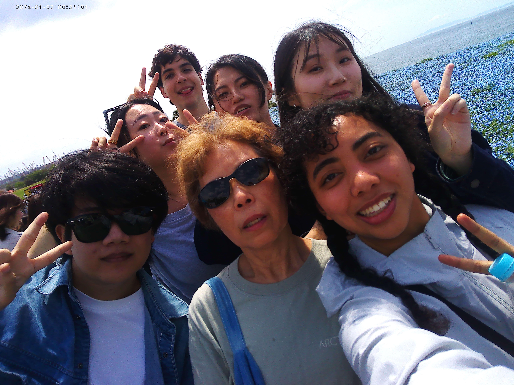

MAISHIMA FIELDS
2026.04.26
Hello MAYASMIND™! MAYASMIND™ unfortunately was down for three days straight. I genuinely thought hackers finally decided to hijack it, but it ended up being my fault. Sorry for blaming you, internet pirates! Anyway, I think my mind is in it’s pre-period phase because today I stayed inside, ate, and played a video game. I only went outside to trek to the Aeon’s (the best place ever) to get food. I love rest days like these.
AEON’S TRIP
I want to emphasize just how cheap the food here is in Japan. Today, I got two miso soups, two ramens, a sushi roll, an onigiri, a box of chocolates, bread, donuts, and a broccoli side dish. How much you ask? $14.71 USD. In America, I assure you my cart would be upwards of $50. I’m so grateful to be here, seriously. And guess what? Everything was SO DELICIOUS and it wasn’t because it was packed with brain-altering addictive chemicals, but because it was made with purpose and intention at the hands of an old Japanese man. AHHHHHHHHHHHHHH I LOOOOOVE AEON’S!
THANK YOU, FRIENDS!
I didn’t really go into detail yesterday about this trip to Maishima, so I will explain today. We went to these fields with beautiful blue flowers named “nemophila.” If I ever get the chance, I will take my family here because it was incredible. I did not come prepared in the slightest. I was so hot, tired, and awkward, but I was grateful to be with everyone. “Everyone” includes Lily-san, Kou-san, Neta-san, Ellie-san, Nhu-san, Raffaele-san, and Maya-san. I know these names don’t mean much without context, but I wanted to (b)LOG this for future reference.
Because it was so hot at the fields yesterday, I started braiding my hair. All of the sudden, Ella-san (Taiwan) began braiding the other half of my hair without me asking. It was so cute and I was so happy. She was struggling quite a bit and had to redo it like three times, but I was so appreciative in that moment. Here is a video (credits go to Ellie-san. Thank you Ellie-san!):
I’M LITERALLY GETTING GIDDY WATCHING! I’M KICKING MY FEET!
Here is a video I took of Lily-san taking a photo of a photo of the field despite it being right in front of her. It was quite silly:
Also, a photo of Lily-san looking mega cool:

Lily-san took soooo many photos of/with me. I was like “is she my grandmother?” She could be my third grandmother if she wanted to. I can never have too many.
FUTURE IN JAPAN???
I’m gonna be honest, I really love Japan. I would totally extend my trip to next year if I could because it is so fun and free. I think this spark I have will dictate my future plans. I kinda want to… become an English teacher here? Is that something I can do? I don’t know? I’m scared. I just want to say that to y’all since I… love y’all? Can I say that? Is that something I can do? I’m blushing. I AM A SKINS CHARACTER!
Anyway y’all, I gotta get some rest. I really want to get a hat tomorrow because I hate how my bangs look when my hair is braided. As I’ve learned from my father and auntie Michelle, hats solve all problems. Henceforth, かわいい帽子を買いたい。じゃね！
